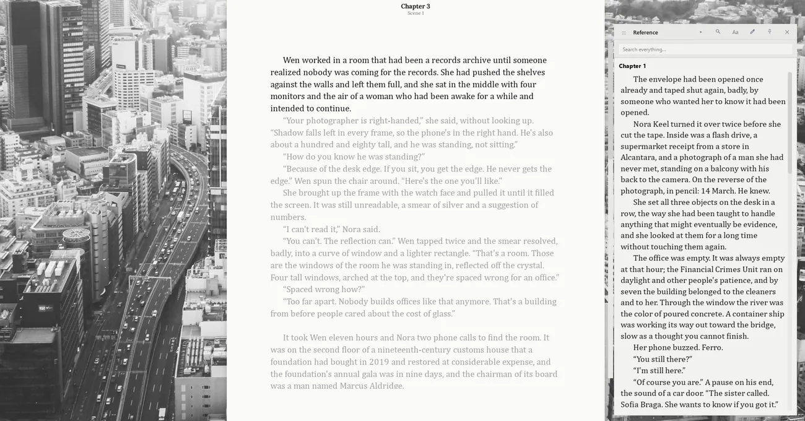

I The editorQenna Writer
A chapter three books ago is one click away
The Reference panel opens beside the page: any chapter, scene or sheet held open next to what you're writing, without switching windows and without losing the thread. Chapters split into scenes, and the scenes show up in the sidebar as sub-items.

- Several manuscripts in one project — draft a whole trilogy without losing track of book one.
- Drawers for characters, places, objects and lore, with a search that sweeps the entire drawer.
- @ mentions linking characters and terms across documents.
- Screenplay mode with the real elements — Scene, Action, Character, Dialogue, Parenthetical, Transition.
- Repetition detector flagging repeated words, adverb pile-ups and paragraphs that ran too long.